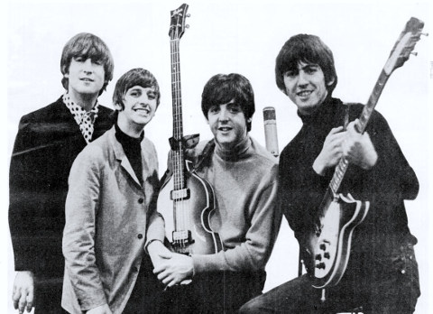

Read the “success” quotes. Which one(s) do you like? Why? Discuss your options with a partner.
What do you think the keys to success are? Think. Then, listen to the article to compare your ideas. Listen many times!
Why are some people successful and others aren’t? What’s the secret of success? Author Malcolm Gladwell thinks he knows.
Many of Gladwell’s ideas appear in his social psychology bestseller Outliers. The popular view is that some of us are born talented and others aren’t. But Gladwell thinks that this is just an excuse for not trying… and if you really want to be good at something, you have to work at it. “Practice isn’t the thing you do once you’re good,” Gladwell writes. “It’s the thing you do that makes you good.”
Central to the book is the “10,000-hour rule”. It means that if you want to be among the best in the world, you need to practise something for 10,000 hours. That’s the equivalent of three hours a day for 10 years. For example, The Beatles played live in Hamburg more than 1,200 times between 1960 and 1964, which is more than 10,000 hours of playing time. And when Microsoft chairman Bill Gates was 13, he was given access to a high school computer (one of the few available in the country), allowing him to practise computer programming for more than (yes, you guessed it!) 10,000 hours.
The interesting thing is that success has nothing to do with intelligence. Take the example of Christopher Langan, who’s mentioned in the book. He’s got an IQ of between 195 and 210 (Albert Einstein’s IQ was estimated to have been between 160 and 180). As a boy at school, Langan was able to take an exam in a foreign language he’d never studied and pass it after just skim-reading a text book for three minutes. However, Langan never graduated from university, and worked in labour-intensive jobs his whole life. This proves that intelligence alone will not lead to success – you need hard work, support, finance and opportunities. Gladwell adds, “No one – not rock stars, not professional athletes, not software billionaires, and not even geniuses – ever makes it alone.”
However, it isn’t just a question of time and support. Even after you’ve put in your 10,000 hours of practice, you still need one other key ingredient – luck. So, you could be the most amazing guitarist in the world, but unless you’re lucky enough to play in front of a record company executive who sees a way of exploiting that talent, you aren’t going to be seeing your name in lights. Of course, many people argue that you can create your own “luck” if you’re proactive enough… but then again, someone who’s willing to practise something for 10,000 hours is probably fairly pro-active anyway.
So, are you putting in the hours? Carry on! You could get lucky! ✪
Read the article. Then, answer the questions.
Look at this extract from the article on this page, “…Langan never graduated from university…” The writer has used a verb (graduated) + a preposition (from). Complete the sentences with the words below. All the sentences contain expressions with from.